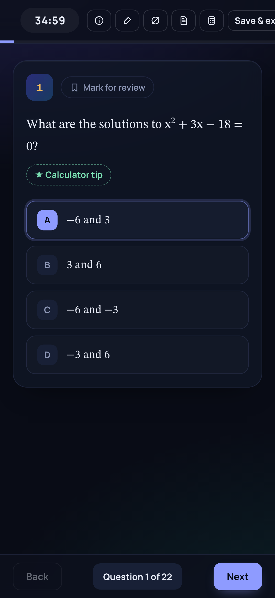
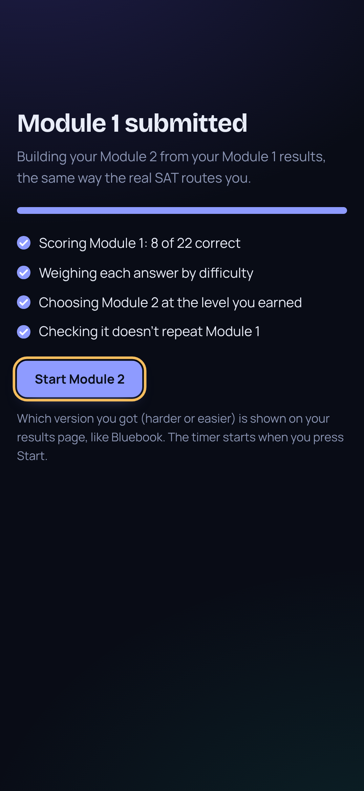
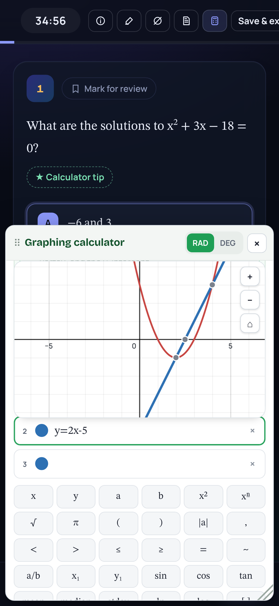
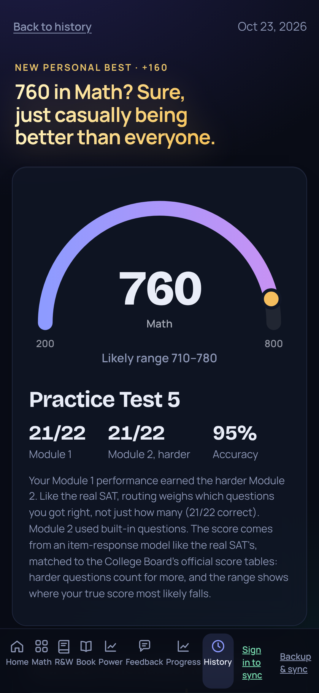
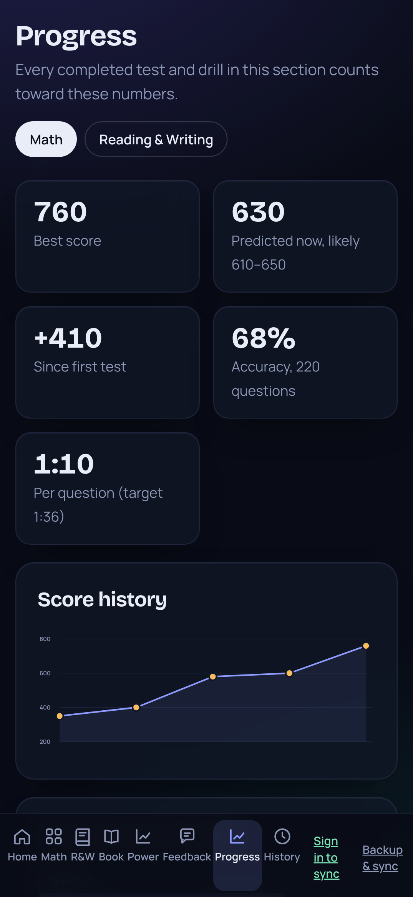

Your SAT score
700
in 30 days.
Here's how.
Digital SAT format
Practice like it's
test day.
Timed modules, real question types, the same tools.

Answer locked in
Adaptive
Module 2
adapts
to you.
Do well and it gets harder, just like the real SAT.

Harder module unlocked
Built in
Graphing
calculator
included.
Graph it, find the intersection, move on.

Real scoring
Know your score
before
test day.
Scored like the real test, with your likely range.

New personal best +160
Progress
Watch every point
add up.
Every test, every skill, every week.

+410 since first test
∑
SAT Studio
Free adaptive practice
for the Digital SAT.
Full tests
Calculator
Progress
sat-studio-rust.vercel.app
Link in bio